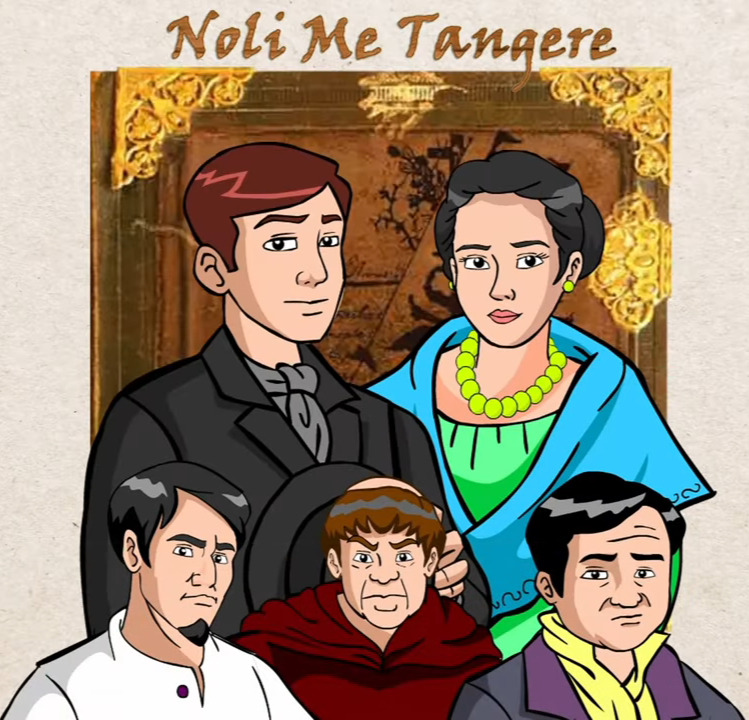

Kabanata 34: Ang Pananghalian

Mga Tauhan:
- Crisostomo Obama
- Maria Clara
- Padre Damaso
- Elias
- Kapitan Tiyago
Mga Talasalitaan:
- • Ga-daling noo -angking talino
- • Nanghihimagas -nagmamatamis
- • Lipos - batbat
- • Pasaring - parunggit
- • Mapanlibak - mapang-uyam
- • Perito - arkitekto
- • Mauklo - matumba
- • Reverencia - paggalang
Buod:
Noong araw na iyon ay darating ang Heneral at tutuloy sa bahay ni Kapitan Tiyago. Magkakaharap na nananghalian ang mga taga San Diego.
Si Ibarra at ang alkalde mayor ay nasa magkabilang dulo ng hapag. Si Maria ay nasa gawing kanan ni Ibarra samantalang sa kaliwa naman niya ang eskribano. Nasa hapag din sina Kapitan Tiyago, iba pang mga kapitan sa bayan ng San Diego, mga pari, mga kawani ng pamahalaan at mga kaibigan nina Maria Clara at Ibarra.
Ang karamihan naman ay nagtaka dahil wala pa si Padre Damaso. Nag-uusap ang mga nasa hapag habang kumakain. Napag-usapan anila ang hindi pagdating ni Padre Damaso, ang kamangmangan ng mga magsasaka sa mga kubyertos, ang mga kursong nais nilang ipakuha sa kanilang mga anak, at marami pang iba.
Maya-maya'y dumating na si Padre Damaso at ang lahat doon ay bumati sa kanya liban kay Ibarra. Habang inihahanda ang serbesa ay nagsimula na ring patutsadahan ng pari si Ibarra.
Sisingit sana ang alkalde sa usapan upang maiba ang paksa ngunit ayaw papigil ng mayabang na pari. Tahimik lamang na nakikinig habang nagtitimpi ang binatang si Ibarra.
Tila nananadya si Padre Damaso dahil inungkat nito ang pagkamatay ng ama ni Ibarra. Sa pagkakataong ito'y hindi na pinalampas ng binata ang mga sinabi ng pari kaya naman muntik na niya itong saksakin.
Mabuti na lamang at pinigilan siya ni Maria kung kaya't bumalik ang kahinahunan ni Ibarra at umalis na lamang.
Mga Mahahalagang Pangyayari:
- Pagdating ng Heneral at pananghalian: Ang Heneral ay dumating sa San Diego at nagkaroon ng malaking pananghalian sa bahay ni Kapitan Tiyago.
- Posisyon sa hapag: Si Ibarra at ang alkalde mayor ay nasa magkabilang dulo ng hapag. Si Maria ay nasa kanan ni Ibarra, at ang eskribano naman ay nasa kaliwa niya.
- Hindi pagdating ni Padre Damaso: Lahat ay nagtaka dahil wala pa si Padre Damaso. Nag-uusap ang mga nasa hapag habang kumakain.
- Pagdating ni Padre Damaso at pang-aasar kay Ibarra: Pagdating ni Padre Damaso, nagsimula na siyang mang-asar kay Ibarra.
- Pag-uusap at pagtitimpi ni Ibarra: Sinubukan ng alkalde na baguhin ang usapan, ngunit hindi pinansin ni Padre Damaso. Tahimik lamang na nakikinig si Ibarra.
- Pagbanggit ni Padre Damaso sa pagkamatay ng ama ni Ibarra: Inungkat ni Padre Damaso ang pagkamatay ng ama ni Ibarra, na nagdulot ng galit kay Ibarra.
- Muntik nang saksakin ni Ibarra si Padre Damaso: Galit na galit si Ibarra at muntik na siyang saksakin si Padre Damaso.
- Pagpigil ni Maria kay Ibarra: Pinigilan ni Maria si Ibarra, kaya bumalik ang kahinahunan niya.
- Pag-alis ni Ibarra: Umalis na lamang si Ibarra.